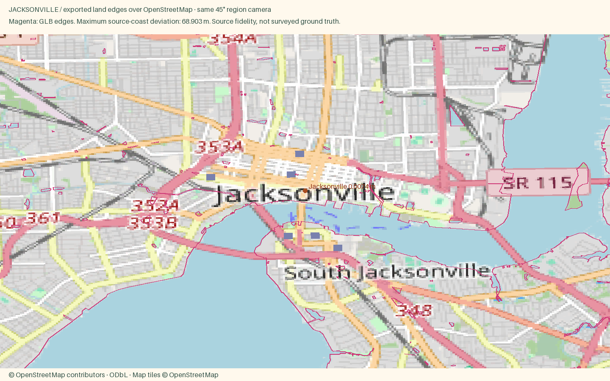
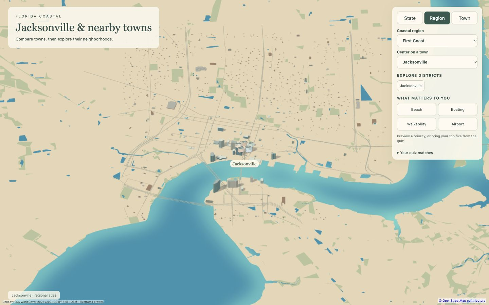
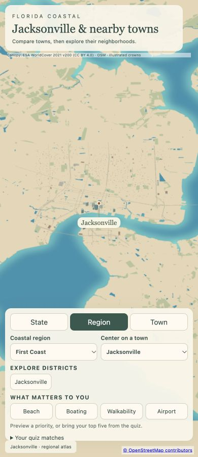

Jacksonville
Open atlas · Accuracy CSV · Sourced medians
Region
Jacksonville
Open districtDowntown towers and riverwalks face each other across the St. Johns, with historic neighborhoods beyond.
Source alignment

Manual fixes
- City-specific package requested by user; other cities in the parent region remain unchanged.
- Separate downtown and historic-residential style zones; source canopy preserved.
- Landmark-specific recipe inputs supply missing height where documented; shared scale caps still apply.
- Input camera fitted to both geographic axes; Census background context extended to cover the wider region frame. Geometry and style implementation unchanged.
- Separated straight river-mouth closure across mapped open water from physical shoreline reference. Land geometry unchanged. https://www.openstreetmap.org/way/138366840
- Separated straight river-mouth closure across mapped open water from physical shoreline reference. Land geometry unchanged. https://www.openstreetmap.org/way/253472100
- Separated straight river-mouth closure across mapped open water from physical shoreline reference. Land geometry unchanged. https://www.openstreetmap.org/way/253129425
- Normalized OSM bridge=movable to bridge=yes for the existing exporter while retaining sourceBridgeType, so Main Street lift span remains continuous across water.
Hero landing images
Desktop 1600 × 1000 · Phone 800 × 1000 · Source conflict audit

Responsive review


Marina boats
126 illustrated moored boats placed beside mapped OSM docks. Positions and dock sources. Boats are illustrative, not live traffic; land-clearance checks pass.